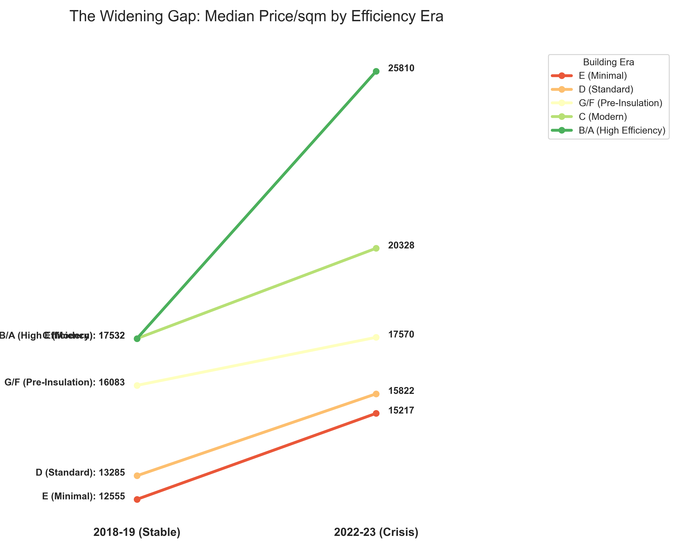

When the global energy market fractured in 2022, Denmark found itself divided not by politics, but by pipes. For decades, the energy efficiency of our homes—the "Energimærke"—was a theoretical label on a technical report. Overnight, it became a primary driver of financial anxiety.
In our major cities, the shock was cushioned. Shielded by collective district heating systems, urban dwellers saw moderate increases. But in the rural landscape, the story was different. Individual natural gas boilers and oil furnaces turned into "toxic assets" as fuel prices skyrocketed.

Figure 1: This slope chart shows the divergence in median price per square meter between building eras. Notice how the oldest, least efficient homes (G/F Era) saw the most significant relative decline in value compared to the 'High Efficiency' cluster during the 2022-23 crisis.
The geography of this crisis is not uniform. While our cities are anchored by collective heating, the rural landscape is a patchwork of risk and reward. Below, we map the distribution of sales across Denmark, highlighting the age of the building stock—a proxy for insulation quality.
Figure 2: Geographic distribution of sales. Green points indicate modern, high-efficiency builds (Post-2010), while red points show the legacy building stock exposed to energy volatility.
Can a homeowner buy their way out of a bad energy label? Our final analysis looks at the 'Price Deviation'—how much more or less a house sells for compared to its local city average. Use the interactive tool below to explore how individual investments in renewable systems (Solar/Heat Pumps) act as a financial buffer.
Figure 3: Interactive strip plot showing price premiums over city medians. Explore how 'Renewable Systems' (blue dots) help even older 'E' and 'D' era houses maintain a premium over their peers.
Our analysis suggests that while the energy label (A-G) is a powerful predictor of price, it is not destiny. In the new Danish reality, the combination of location and technical autonomy is redefining what it means for a home to be resilient.